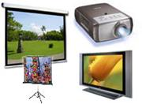
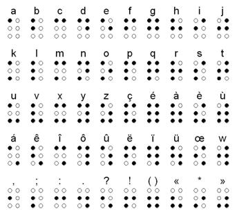
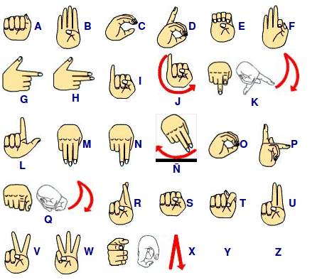
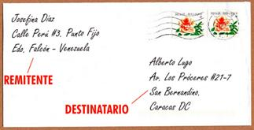

Otras opciones de comunicación
Internet… es una gran red descentralizada de ordenadores, de ámbito global y públicamente accesible, que proporciona una colosal cantidad de servicios de comunicación de varios tipos, incluyendo la World Wide Web o WWW, el correo electrónico y muchos otros.
Radioafición… es tanto un hobby o pasatiempo como un servicio, en el que los participantes, llamados "radioaficionados o radioescucha",utilizan varios tipos de equipos de radiocomunicaciones para contactar a otros radioaficionados para el servicio público, la recreación y la autoformación.
Los operadores de radioafición gozan de comunicaciones inalámbricas personales, y son capaces de apoyar a sus comunidades con comunicaciones de emergencia si es necesario.
Se estima que unas seis millones de personas en todo el mundo participan regularmente de radioafición.

Medios audiovisuales…Los medios audiovisuales se refieren especialmente a medios didácticos que, con imágenes y grabaciones, sirven para comunicar un mensaje especialmente específico.
Entre los medios audiovisuales más populares se encuentra la diapositiva, la transparencia, la proyección de opacos, los diaporamas, el video y los nuevos sistemas multimediales de la informática.

Sistema Braile… Desde 1825, año en el que Louis Braille ideó su sistema de escritura en relieve, las personas invidentes cuentan con una herramienta válida y eficaz para leer, escribir, componer o dedicarse a la informática.
El Sistema Braille no es un idioma, sino un Alfabeto. Con el braille pueden representarse las letras, los signos de puntuación, los números, la grafía científica, los símbolos matemáticos, la música, etc.
El Braille suele consistir en celdas de seis puntos en relieve, organizados como una matriz de tres filas por dos columnas, que convencionalmente se numeran de arriba a abajo y de izquierda a derecha, tal como se muestra en la imagen.

Sistema de comunicación para sordomudos…la Lengua de Señas o Lengua de Signos, es una forma natural de expresión y representación que se basa en gestos con las manos con una ubicación determinada.
Se basa en la percepción visual (o incluso táctil por ciertas personas con sordoceguera), y gracias a ella las personas sordas pueden establecer un canal de comunicación con su entorno social, ya sea conformado por otros individuos sordos o por cualquier persona que conozca la lengua de señas empleada.
Mientras que con el lenguaje oral la comunicación se establece en un canal vocal-auditivo, el lenguaje de señas lo hace por un canal gesto-visual-espacial.
Correspondencia escrita…El servicio postal es un sistema dedicado a transportar documentos escritos y otros paquetes de tamaño pequeño alrededor del mundo. El 9 de octubre se celebra el Día Mundial conmemorando la fundación de la Unión Postal Universal (UPU) en 1874. Todo paquete enviado a través del sistema postal es llamado correo o correspondencia.
Un sistema postal puede ser privado o estatal. Los sistemas privados a menudo tienen impuestas restricciones por parte de los gobiernos.
En Venezuela el correo estatal o público está a cargo del Instituto Postal Telegráfico de Venezuela (IPOSTEL).
El envío de correspondencia es un proceso sumamente sencillo, primero se debe preparar en un sobre o empaque adecuado lo que se desea enviar, como por ejemplo una carta, una postal, una insignia u otro objeto por el estilo.
Es muy importante que escribas por fuera del sobre o paquete, tanto los datos del Remitente (quien envía) como del Destinatario (quien lo recibe).

Finalmente hay que dirigirse a la oficina postal más cercana y entregar la correspondencia al encargado para que esta sea transportada, previa cancelación del costo de envío a través de la utilización de los sellos postales o estampillas correspondientes.